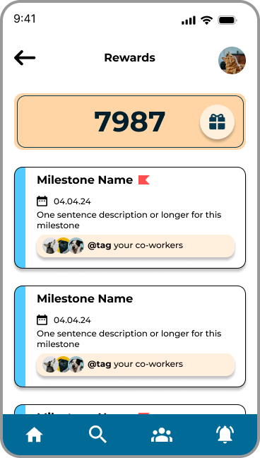
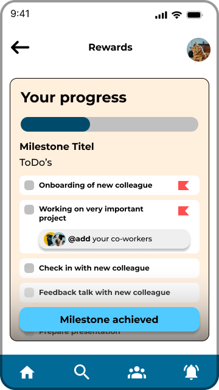
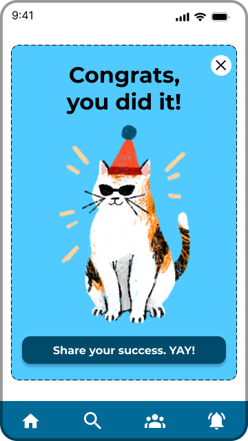
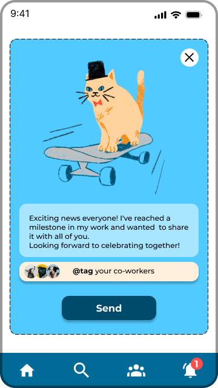
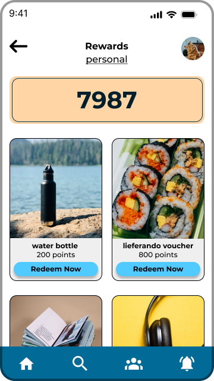
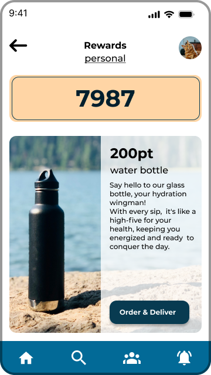
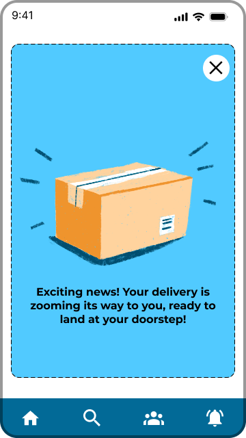
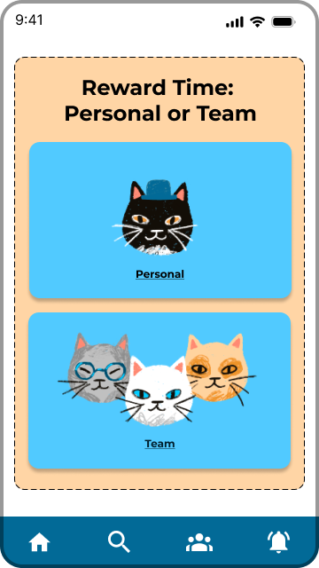

The Brief
Designing for Engagement
As part of a job application process, I was asked to design a points-based reward feature for an existing team collaboration app. The goal: boost engagement by letting users collect points and redeem them for personal or team rewards.
Track points and milestones at a glance
Set deadlines and manage priorities via intuitive icons
Personalise with a pet theme (cat or dog persona, set in profile)
Tag colleagues and share milestone celebrations with the team




Milestone tracking with deadlines and priority icons. Reaching a milestone triggers a celebration that can be shared with the team.




Users choose between personal and team rewards via card-style options. A delivery notification closes the loop.
What I learned
Figma: components, Auto Layout, interactive prototyping
Conceptual thinking: planning a full user flow from idea to implementation
User focus: designing intuitive, motivating features around real usage patterns